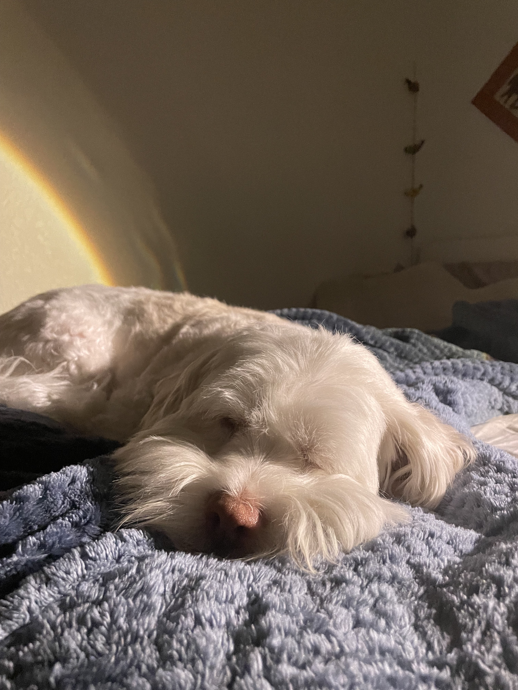
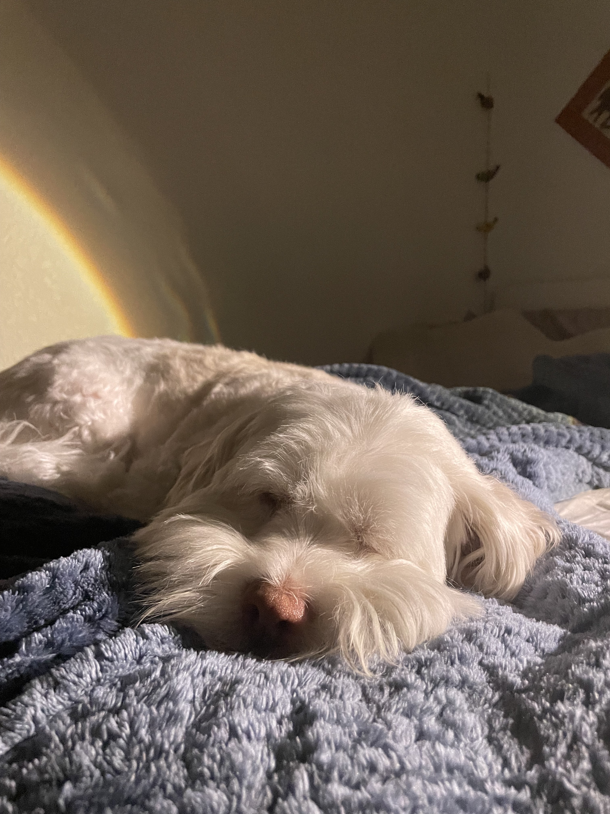
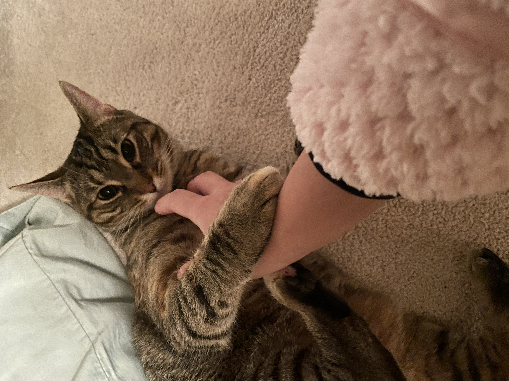

Juno

No one knows exactly what breed Juno is, but that makes him all the more special. He was adopted before he was one year old; despite this and his German shepherd-esque looks, he stayed close to the same size, hovering around 50 lbs into adulthood. At the weathered age of ten years old, Juno is dealing with hip problems, but manages to stay in good spirits. One of Juno’s favorite pastimes is finding the dirtiest puddle within a one-mile radius and making sure every inch of him makes contact with said puddle. If rolling around in dirt was an Olympic sport, Juno would have been the one that facilitated its inclusion into the Olympics.
Photo Gallery


Likes
- Human food
- Head pats
- Sleeping
Pluto

Pluto is a five year old rescue dog of an unknown breed. He was found wandering alone and taken to the Valley Humane Society where he found his new family. From a young age, Pluto always had a special personality, he was known for being very very lazy! He spends most of his time staring out the window to keep watch of his house. Don’t let the laziness fool you because Pluto defends his family from the mailman and squirrels every single day. Aside from his job as defender of the house, Pluto likes to have fun. Pluto’s favorite part of the day is his daily walk. Sometimes he even gets to go to the park and meet his neighbors. He also loves his toy duck, and only his toy duck. As a dog, it's in his nature to hunt and so he makes sure to get some practice with his toy duck.
Photo Gallery
 


Likes
- Walks
- Dog biscuits
- His toy duck
Maple

Maple is a 2 year old tabby cat with brown stripes. She is very playful and friendly but also loves lounging in the sun! Maple is a huge fan of treats - she has even learned how to open doors to steal some extra treats. Sometimes Maple has boundless energy. At night, she gets the zoomies after eating her final meal of the day. It usually takes her another hour to settle down before she can take a long nap.
Photo Gallery


Likes
- Belly rubs
- Treats
- Stretching her paws
Smoothie

Smoothie has been dubbed the "world's most photogenic cat", and her emerald eyes and golden fur have even inspired a mural in New Zealand. Smoothie also has an aptly-named brother named Milkshake, and the two are often featured together across social media platforms. She became an internet sensation with 2.3 million followers on her smoothiethecat Instagram account.
Photo Gallery


Likes
- Playing
- Sunshine
Sage

Sage is a 3 year old Golden Retriever. She is one of the laziest dogs. She loves sneaking into the bedroom and hopping onto the neatest bed. She also loves riding in a car with the windows open feeling the wind and air. She enjoys walking, only if you take her for a ride to a big arboretum or park. Walking around the neighborhood is not necessarily her cup of tea. Her favorite food is corn. One day, she stole corn on the cob from the dining table, which was surprising because she is normally gentle and polite. She took the stolen corn to the patio and enjoyed her meal by herself. Unfortunately, the corn turned out to be unripe, so she ended up vomiting it all later.
Photo Gallery


Likes
- Carrots
- Naps
- Big parks